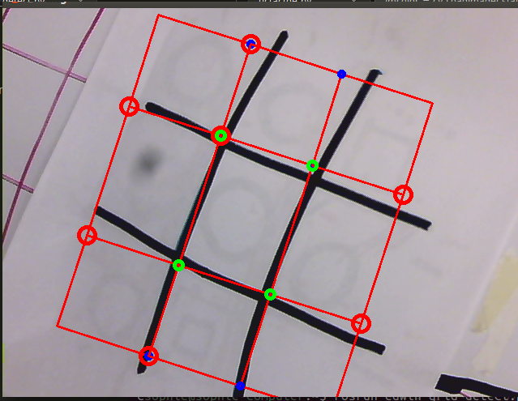

Portfolio.Edwin
| < | LIST |
> |
Edwin is the newest member to the Olin Robotics Lab. His base is an R17 Robotic arm, but the "hand" is replaced with a 3D printed model of a dinosaur head. Since the head is 3D printed it allows us to switch in separate models as necessary. I'm the project leader of a group of 5 students that are currently working on him.
Here's an example of what playing tic-tac-toe with Edwin is like! (You may have to click on a video twice to get it to play, the javaScript used to sync the two videos together has a few idiosyncracies.)
Visual tic-tac-toe is an interesting problem, especially in the case of Edwin. To be able to visually identify the grid and the markers on the paper, we used a lot of OpenCV. Here's an example of what the video output looks like while Edwin is trying to figure out where is grid is:

Again this project is heavily OpenCV based, from using the goodFeaturesToTrack() function to find the corners of the tic-tac-toe grid, to using HoughCircles() to find the circles a user draws in order to mark their turn.
The tic-tac-toe algorithm ensures that Edwin will know where to move next if he has a correct understanding of the field at each step. There's a field_scan() function in the code that does this by looking at the area of the contours to make sure no hands are in the frame, and notifies the correct callback functions so Edwin knows to make a move when the other player has completed their turn.
Since the R17 arm was a completely foreign piece of hardware to our team, I wrote a lot of wrapper functions to expose lower level controls to our Python scripts. I've learned a surprising amount about FORTH and serial communication. Thankfully, the R17 comes with a box that computes all the necessary inverse kinematics, so we just need to properly transition between camera coordinates to real world coordinates so Edwin knows where to draw his squares.
Tic-tac-toe is at its core a demo. We wanted to show everyone what we could do with such a great piece of hardware, and have completed our objective. Currently, the team is working on the next iteration of Edwin's head (so he'll be cuter), and a higher level "emotion-driven" expression of behaviors. Stay tuned, it'll be exciting!
>
|